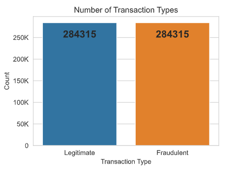
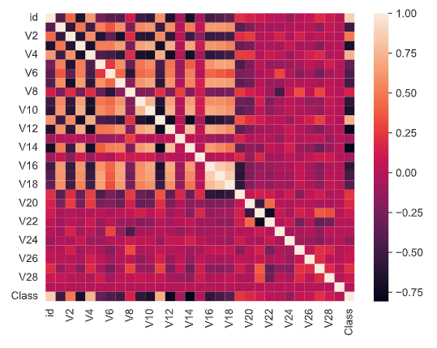
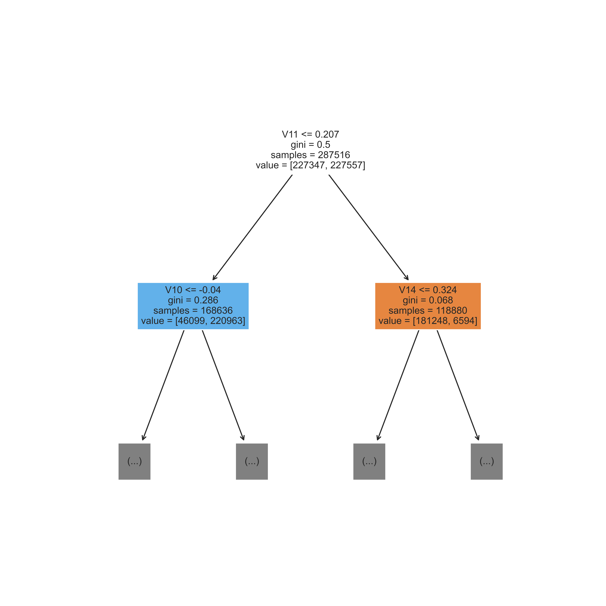

Detecting Fraudulent Credit Card Transactions
In an era where digital commerce has become an integral part of our daily lives, the convenience of the credit card is undeniable. But with this convenience comes a dark and lurking threat: credit card fraud. As the world of financial transactions continues to evolve, so too do the methods employed by cybercriminals to exploit it. The battle between financial institutions and fraudsters is relentless, with billions of dollars at stake. In this digital cat-and-mouse game, data scientists and machine learning wizards have emerged as the unsung heroes, harnessing the power of algorithms and analytics to protect us from the ever-evolving threat of credit card fraud. Join me on my journey through the fascinating realm of analyzing real world credit card transactions, as I attempt to spot fraudulent activities. Get ready to dive deep into the data, uncover the patterns, and unlock the secrets of the financial world's most intricate puzzle.
The data I will be analyzing comprises over 550,000 transactions, collected from European cardholders during 2023. For anyone interested, the dataset can be found right here. Let's dig in, shall we? First, the target. The point of this project is to determine whether a certain transaction is fraudulent or not, so each data point is labeled as 1 (fraudulent) or as 0 (not fraudulent) in the Class column. It's pretty simple, thankfully. Now, onto the bulk of this project, the features. There are 30 included in this dataset. First, an ID column assigns a unique identifier to each transaction. This column does not provide any useful information, so we will drop it during our data cleaning. The second noteworthy feature is the Amount column, which coincidentally holds the amount transferred during each activity.
Finally, we have the columns V1 through V28. These features hold information like the time or location, but have been anonymized to ensure privacy and compliance with ethical guidlines. While this does make it a lot harder to look beneath the hood of our machine, I felt the trade off was worth it. The removal of sensitive information was well worth the opportunity to work with real customer data. This extra anonymization step would be highly recommended, if not required, in real-world applications to ensure the privacy and security of customers. All incoming data can be run through the pipeline in real-time and then fed into the model. Only if the transaction was flagged as potentially fraudulent would the process need to be reversed, or the original data looked up.
Now that we have a general idea of the variables we will be looking at, let's take a closer look at our data. I started off by calling the pandas function
describe(), which gives a thourough statistical analysis of our dataframe. The only interesting aspect I found was that our V1 through V28 columns all have
a standard deviation of 1, clearly a result of the anonymization process. There are no null or mismatched values either. I also looked at the number of
occurances of each transaction type, which can be seen below. There are exactly 284,315 transactions of each type, giving us a perfectly balanced dataset.
This is an important aspect to consider, as not all classification algorithms can handle unbalanced data. Since this data is a balanced as can be, we have
no restrictions on the algorithm we use.

Next, I created a correlation matrix. This is a common technique used to determine if any two features have a high correlation to each other. We check for
this condition because highly correlated features add complexity without adding new information. The machine learning model has another variable to look at,
which exponentially increases the number of patterns it needs to check, while not adding value. If two features are highly correlated, one feature can
pretty accurately predict what the other will contain. Not useful for finding meaningful patterns. Also of note, some models have trouble when two or more
features are highly correlated. Below is the correlation matrix for our credit card data. While there is some correlation in the V1 through V18 features,
nothing quite reaches the recomended threshold for removal.

It seems like the data has been thouroughly cleaned and vetted already. I only need to make two small changes. First, I'm dropping the id column, as I discussed before. I'm also changing the labels in the Class column from 0 and 1, to Legitimate and Fraudulent. (Now I can stop checking the documentation over and over.) We have one last step before we get to train a machine learning model! We need to split our data intro the training set (which the model uses to learn which parameters to use) and the testing set (which we use to determine how well the model has learned.) Thanks to scikit-learn, this process is quite easy. Now we have our two sets. with 80% belonging to training, and 20% belonging to testing.
We can finally get to the fun part! I've chosen to attempt to solve this binary classification problem with a Random Forest Classifier. Random Forest are
great models, as their ensemble nature reduces the chance of overfitting, which is a common issue with single Decision Trees. After training the model, I
extracted a random tree so that I could get a small sense of what it was doing.
